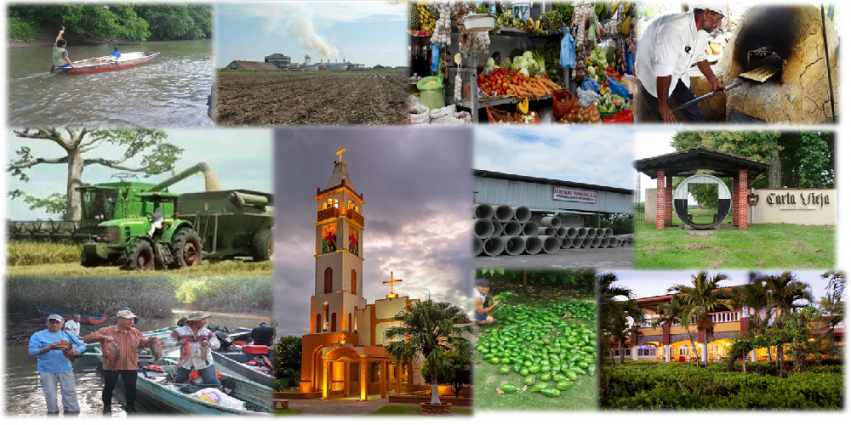
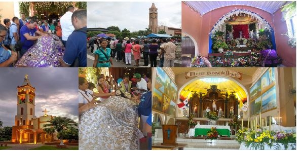
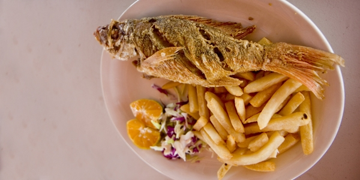

Donde nadie es forastero
Municipio de Alanje
Un municipio comprometido con el ambiente
Costumbres

El Distrito de Alanje es muy reconocido por sus tradiciones de Semana Santa, en la cual el Santuario de Santiago Apóstol de Alanje es muy visitado, a conmemorar al Santo Cristo de Alanje, muchos devotos traen sus ofrendas a dar gracias por sus peticiones y milagros. Otras de las costumbres que exalta a este Distrito son las tradicionales carreras de caballo para el Santiago Apóstol que es día Patronal de nuestro Distrito.
Comidas y Bebidas
